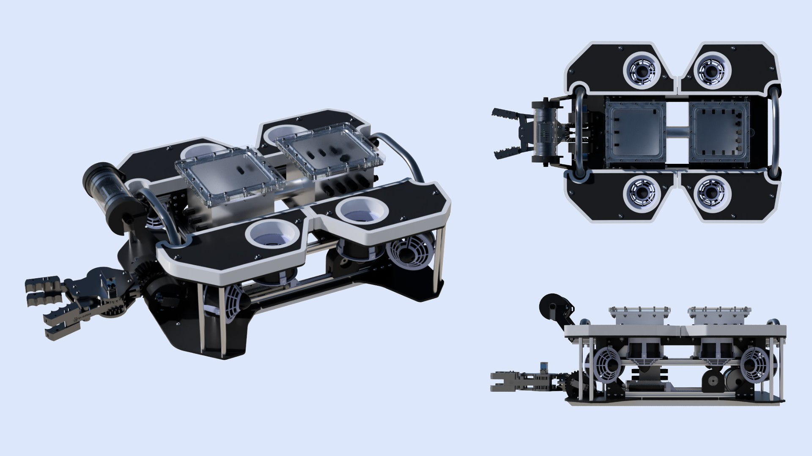
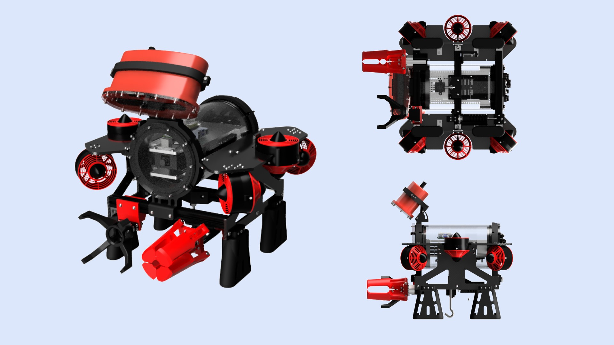
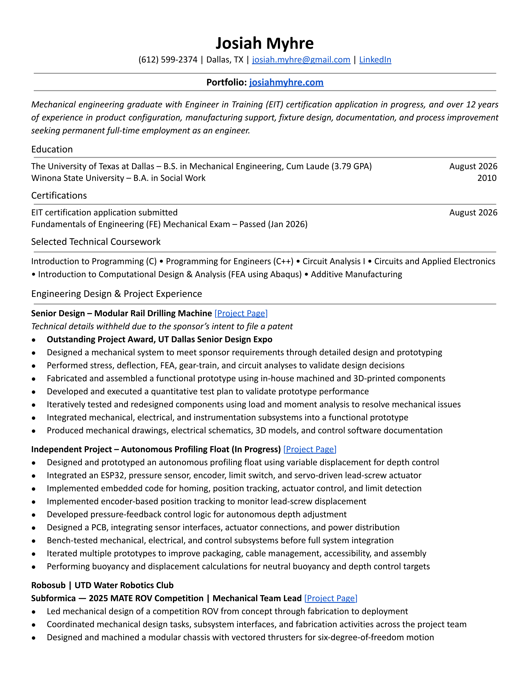

Projects
Click a project for more details.
FE Mechanical Exam passed January, 2026. EIT Cert pending graduation.
Graduating August 2026
Click a project for more details.

Subformica is an underwater remotely operated vehicle that was designed and built by the Robosub club at UT Dallas for the 2025 Marine Advanced Technology Education (MATE) ROV World Championship. Teams compete in accomplishing tasks designed to simulate real-world ocean health initiatives. The competition took place in Alpena, Michigan June 19-21, 2025.
My Role: Mechanical Team Lead
(details on each below, click to jump)
Perhaps my largest contribution, other than management of the overall design process, was the design of the chassis. It was designed in parallel with the electronics enclosure, and underwent many iterations before completion. It is constructed primarily of t-slot extrusion and phenolic panels. Other than the phenolic panels, which were waterjet cut by a sponsor, the frame was designed, machined, and assembled by me.
Requirement: Modularity
Solution: T-slot extrusion provides attachment points anywhere along their length. Phenolic panels are rigid, yet easy to machine in place for additional mounting options.
Requirement: Six Degrees of Freedom
Solution: Thruster mounting positions were placed in a vectored configuration that allowed for translation and rotation about all axes.
Requirement: Safe and Ergonomic Handling
Solution: Two marine grade handles secured to the structural frame of the ROV provide easy to identify handling points, preventing damage to the vehicle, and provide an ergonomic way to interact with it.
Requirement: One-Handed Retrieval
Solution: Two sleds on the bottom of the frame, machined from nylon, allow the vehicle to slide on the edge of a dock or pool for easy one-handed retrieval with minimal lifting.
Requirement: Tether Strain Relief
Solution: A stainless rope guide bolted to the rear of the t-slot frame provides an attachment point for the tether’s strain carabiner.
One of the tasks in the competition was to extract 50ml of an unknown liquid sample from a container on the bottom of the pool that had a small opening covered in plastic film that needed to be punctured. The extraction tool was designed, printed, and assembled by me.
Requirement: Puncture Plastic Film for Extraction
Solution: A 4mm diameter stainless steel tube that can be mounted vertically while in use or horizontally when stowed is attached to the bottom panel of the ROV near the front. The extraction tube can be quickly swapped between stowed and in use positions by sliding it on and off of a rail. Magnets embedded in the printed material snap it in place ensuring that it is secured in either position.
Requirement: Extraction of 50mL of fluid
Solution: A 60 mL syringe is mounted to the bottom frame of the ROV where it attaches to the stainless tube with silicone hose and is actuated by a servo via rack and pinion.
Throughout all the tasks in the competition there were a number of orientations that props could be. Some teams handle this by having multiple object manipulators, however our team decided that we wanted to have a single object manipulator capable of both rotation and tilt. Design, production, and assembly of the mechanism were done by me.
Requirement: The claw must rotate 90-degrees and tilt 90-degrees
Solution: A differential gear mechanism allowed us to tilt the claw by driving the gears in the same direction and rotate the claw by driving them in opposite directions.
Requirement: Must Use 180-degree Servos and be capable of rotating and tilting 90-degrees at the same time
Solution: The price of brushless servos (necessary for waterproofing) capable of greater than 180 degrees of rotation was prohibitively expensive for the club. By using a 3:4 gear ratio, the claw could be both tilted and rotated 90 degrees at the same time with only 180 degrees of rotation from either servo.
Requirement: Electrical Simplicity
Solution: The differential gear mechanism allows us to use only two servos that remain stationary relative to the chassis. This is important, because the more that the servos and their cables move, the more likely their waterproofing is to fail. An object manipulator failure mid-competition would essentially end the run, so every effort to minimize the possibility was taken.
For a few of the tasks, special tooling was required. Some teams chose to incorporate permanent one-purpose tooling on their vehicles to address these tasks, however, space is limited and permanent tooling adds weight and drag. For this reason, we decided to create attachments for the object manipulator that could be taken on and off quickly mid-run. Both attachments were printed in PETG. The attachments were designed, printed, and assembled by me.
Requirement: Tool-less Installation and Removal
Solution: Each attachment is secured to one of the jaws of the object manipulator with a custom printed thumbscrew. A large T handle allows for blind interaction, ensuring quick installation and removal.
Requirement: Capture and contain a “medusa jellyfish” without grabbing it
Solution: The medusa catcher (pictured above) was created to use the object manipulator jaw actuation to open and close a container that could then be quickly removed topside by a team member for delivery to judges. Magnets embedded in the lid and container hold it onto the claw attachment verticals, while still allowing for quick removal.
Requirement: Collect loops attached to a frame floating on the surface of the water
Solution: Interacting with things on the surface of the water is difficult given that the vehicle is submerged. the surface hook (pictured above) achieves this by extending an arm above the ROV so that it can collect loops located at the waterline. A barb at the end of the arm prevents loops from falling off the arm while the ROV is maneuvering.
For an underwater vehicle like an ROV, ensuring that the vehicle is neutrally buoyant is critical to its maneuverability. While it is possible to operate an ROV that isn’t neutrally buoyant, having to compensate for vertical drift while interacting with props is detrimental to the operator’s ability to complete them in a timely manner. The buoyancy panels are constructed of Formular 150, skinned in vinyl, and trimmed with PETG. The buoyancy panels were designed, machined, and assembled by me.
Requirement: Neutral Buoyancy
Solution: For simplicity we chose to go with passive buoyancy panels. After everything else was complete and mounted to the ROV, I modeled the panels to have the same profile as the top panels on the ROV. Then, using a crane scale, we measured the submerged weight of the ROV. Using the density of the Formular 150 that the panels were to be constructed of, I calculated the thickness that they would need to be to compensate for the vehicles water weight. I cut the Formular 150 on a vertical bandsaw using a template and milled them to the correct thickness on a manual mill.
Requirement: Aesthetically Appealing
Solution: While aesthetics were secondary to function, the overall appearance of the vehicle was important. Given that we needed to create marketing material as part of the competition, and that the panels covered so much of the craft, it was important that they drive the aesthetic of the vehicle. Formular 150 is pink foam with branding printed on it, so I covered them in a black adhesive backed vinyl and printed a white PETG trim that was then attached using marine grade adhesive. This provided a clean, purposeful look, as well as a place for us to place our sponsor’s logos.
Camera mounting was a crucial part of the ROV’s design. One of our team members designed a camera enclosure that allowed the camera to tilt so that operators could look down at the tooling when interacting with props, straight ahead while maneuvering, or even up at the surface when needed. Even with this articulation, the exact placement of the camera proved to be difficult to home in on. I created a two-piece bracket that allowed us to reposition the camera during our testing phase to determine the optimal placement for all tasks. Once everything else had been finalized, I created the rigid bracket shown to hold the camera precisely where it needed to be. Mount design, printing, and assembly were done by me.
To reduce costs, we manufactured as much of the ROV ourselves as possible. I was fortunate enough to have access to a machine shop at my place of work. Below are the components I machined. Cycle through the carousal above to see the corresponding images.
Junction Box (Image 1-2)
I machined the junction box on a manual mill from a solid block of 6061 aluminum. The O-ring gland radii were created by calculating 16 points on each and plunging with an end mill. The gland was then sanded by hand and pressure tested until a perfect seal was achieved.
Acrylic Enclosure Covers (Image 3-4)
The panels were cut to size on a vertical band saw, and the hole patterns were drilled on a manual mill.
Enclosure (Image 5)

VESPA was a remotely operated underwater vehicle designed and built by the RoboSub club at the University of Texas at Dallas for the 2024 Marine Advanced Technology Education (MATE) ROV World Championship. Teams compete in accomplishing tasks designed to simulate real-world ocean health initiatives. The competition took place in Kingsport, Tennessee June 20-22, 2024. Our team took 3rd place overall in the pioneer class, and 1st place for technical documentation.
My Role: Mechanical Team Member
(details on each below, click to jump)
Describe object manipulator here
Requirement: State Requirement
Solution: Describe Solution
Describe spool tool here
Requirement: State Requirement
Solution: Describe Solution
Describe rotator tool here
Requirement: State Requirement
Solution: Describe Solution
Describe topside control box here
Requirement: State Requirement
Solution: Describe Solution

Goal: Explain what a profiling float is.
My role: Designed, manufactured, assembled, programmed.

Description: Explain Galaxsea and Roboboat.
Contribution: Lidar and stereo camera active gimbal mount
How It Works: Explain functionality
Images: Show images.
Description: Explain how this is the solution to a problem.
Skills: CAD, FDM, Machining
Images: Add CAD images, drawings of machined parts, assembled and holding parts.
Description: Explain how this is the solution to a problem.
Skills: CAD, FDM
Images: Add CAD images, drawings of machined parts, assembled and holding parts.
Description: .......
Skills: .......
How It Works: .......
Images: .........
Description: Explian the design need.
Skills: Python, Google Collaboratory
How It Works: Explain functionality
Images: Show screenshots.


After spending more than a decade in technical sales, manufacturing support, and operations, I decided to go back to school to pursue a career in mechanical engineering. My previous experience gave me an appreciation for the entire product lifecycle—from design and manufacturing to customer support—which continues to influence the way I approach engineering problems today.
My professional background includes technical sales, production support, process improvement, fixture design, CAD modeling, technical documentation, and collaboration between engineering, manufacturing, and customers. I am currently completing a B.S. in Mechanical Engineering at the University of Texas at Dallas (expected Fall 2026).
Outside the classroom, I've been heavily involved in hands-on engineering projects. As Mechanical Lead for UTD's underwater robotics team, I helped design and build remotely operated vehicles for the Marine Advanced Technology Education (MATE) ROV World Championship.
When I'm not working on engineering projects, I tend to spend my time exploring new tools and ideas, often through hands-on experimentation. I've always enjoyed taking things apart, learning how they work, and solving problems that I don't already know the answer to. Few things are more satisfying to me than spending hours on a difficult problem and finally reaching the point where everything clicks.
This portfolio highlights some of the projects that have shaped my development as an engineer and reflects the way I enjoy learning: by building, experimenting, and figuring things out.
The fastest way to reach me is email or LinkedIn.